Jacquelin Charbonnel
Permanent link : https://JacquelinCharbonnel.github.io
Archive de mes cours
-
master data science : Unix — Python OO↝ — Django — Programmation concurrente
-
licence informatique : C↝ — Apache — KVM
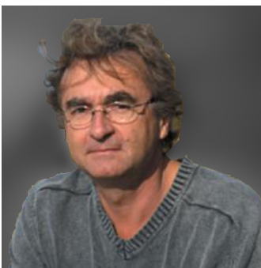
Ingénieur de recherche CNRS
1. Exposés
| == 2025 == | |||
|---|---|---|---|
Laboratoire XLIM, mai 2025 |
Journées Mathrice |
- |
| == 2023 == | |||
|---|---|---|---|
Institut Henri Poincaré, novembre 2023 |
|
Journées Mathrice |
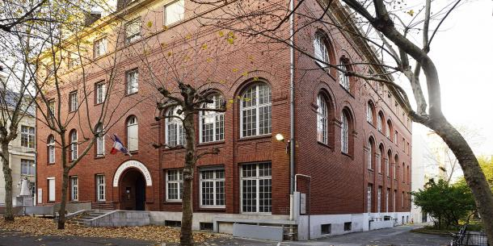 |
Institut de Mathématiques de Bordeaux, mars 2023 |
Journées Mathrice |
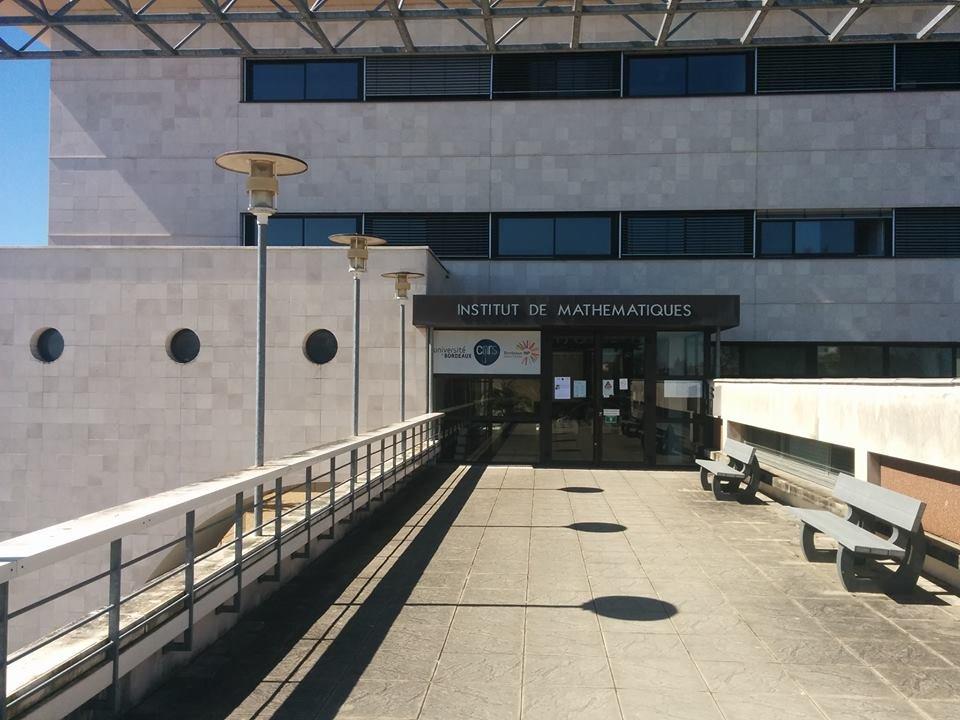 |
| == 2022 == | |||
|---|---|---|---|
Université d’Angers, juin 2022 |
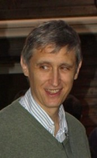 |
| == 2021 == | |||
|---|---|---|---|
IMJ-PRG - Paris, octobre 2021 |
20 ans Mathrice |
| == 2019 == | |||
|---|---|---|---|
IMATH — Toulon, octobre 2019 |
Journées Mathrice |
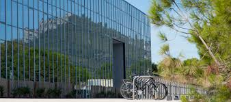 |
| == 2015 == | |||
|---|---|---|---|
LAREMA — Angers, 5 mai 2015 |
Comité INSMI |
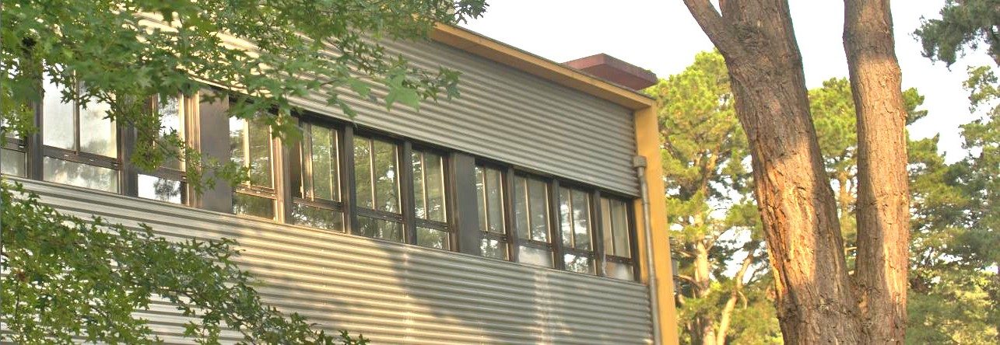 |
|
UPMC — Paris, mars 2015 |
Visite des laboratoires de maths de Paris Centre |
| == 2014 == | |||
|---|---|---|---|
CNRS délégation Rennes — octobre 2014 |
Journées CARGO |
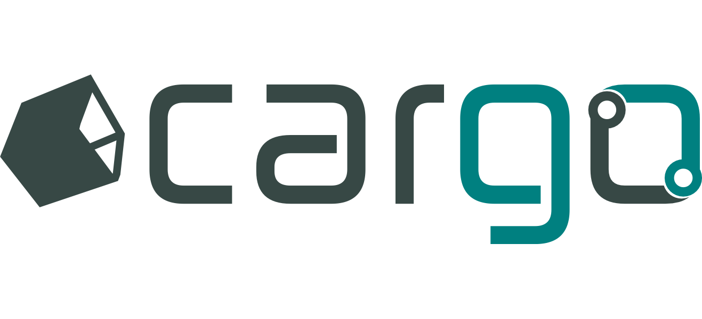 |
|
Lac de Maine — Angers, septembre 2014 |
ANF Mathrice |
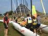 |
| == 2013 == | |||
|---|---|---|---|
Montpellier, décembre 2013 |
|
JRES 2013 |
|
CIRM — Marseille, mai 2013 |
Rencontres du Réseau National des Bibiothèques de Math |
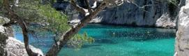 |
|
Paris, avril 2013 |
Journées des Directeurs d’Unités de l’INSMI, CNRS |
||
CNRS — Paris, janvier 2013 |
Institut des Sciences de l’Information et de leurs interactions (INS2I) |
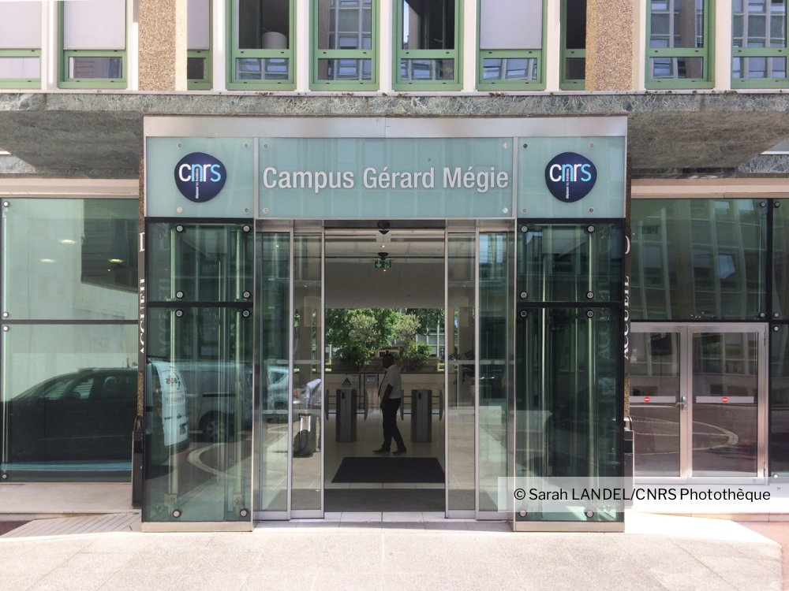 |
| == 2012 == | |||
|---|---|---|---|
Institut Denis Poisson — Orléans, octobre 2012 |
Journées Mathrice |
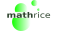 |
|
ENSSIB — Lyon, juin 2012 |
|
||
Lac de Maine — Angers, mai 2012 |
Semaine Développement logiciel pour l’administration système et réseau, Mathrice |
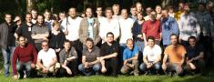 |
|
Lac de Maine — Angers, mai 2012 |
Semaine Développement logiciel pour l’administration système et réseau, Mathrice |
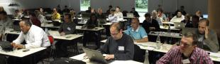 |
| == 2011 == | |||
|---|---|---|---|
ICJ — Lyon, octobre 2011 |
Projet de renouvellement du GDS (Journées Mathrice) |
||
ICJ — Lyon, octobre 2011 |
Journées Mathrice |
||
ICJ — Lyon, octobre 2011 |
Journées Mathrice |
||
Université de Strasbourg — juin 2011 |
JoSy Virtualisation |
||
IMB — Dijon, mars 2011 |
Présentation aux journées Mathrice de printemps |
||
CNRS délégation Paris Centre — janvier 2011 |
Formation permanente du CNRS sur la virtualisation |
| == 2010 == | |||
|---|---|---|---|
ESPCI — Paris 22 novembre 2010 |
JoSy Plume Logiciels libres de base utiles à tout ASR |
||
Université Paris Descartes — 4 février 2010 |
| == 2009 == | |||
|---|---|---|---|
Nantes, décembre 2009 |
Poster JRES |
||
CIRM — Marseille, novembre 2009 |
ANF Mathrice au CIRM |
||
ENSPS — Strasbourg, octobre 2009 |
|||
LAREMA — Angers, juillet 2009 |
TP proposé à la DDN de l’université |
||
Faculté des sciences — Angers, mars 2009 |
Journées mathrice |
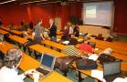 |
|
LAREMA — Angers, mars 2009 |
TP journées Mathrice |
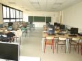 |
|
LAREMA — Angers, mars 2009 |
Présentée aux journées Mathrice d’Angers |
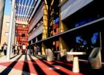 |
| == 2008 == | ||
|---|---|---|
La grande motte, septembre 2008 |
Semaine UREC Aide à la détection des faiblesses d’un site web |
|
Septembre 2008 |
Mesures pour trouver la bonne config KVM |
|
Août 2008 |
Mesures de performance sur VMWare et KVM |
| == 2004 == | ||
|---|---|---|
Hourtin, juin 2004 |

Publications
Langage C++ : le standard ANSI/ISO expliqué — Jacquelin Charbonnel — Dunod 1999 |
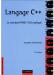 |
Langage C++ : les spécifications du standard ANSI/ISO expliquées — Jacquelin Charbonnel — InterEdition 1997 |
|
Langage C++ : la proposition de standard ANSI/ISO expliquée — Jacquelin Charbonnel — Masson 1996 |
|
Langage C : les finesses d’un langage redoutable — Jacquelin Charbonnel — Armand Colin 1992 |
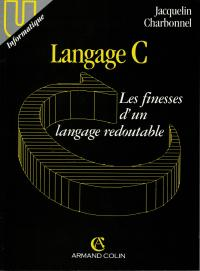 |
Coopération
Labé, septembre 2013 |
Collaboration Université de Labé, Guinée |
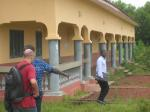 |
Yaoundé, mars 2012 |
Collaboration IFTIC-SUP, Cameroun |
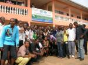 |
Yaoundé, novembre 2010 |
Collaboration Institut Africain d’Informatique, Cameroun |
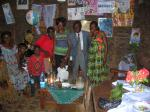 |
Yaoundé, février 2010 |
Collaboration Institut Africain d’Informatique, Cameroun |
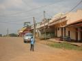 |
Libreville, décembre 2009 |
Collaboration Institut Africain d’Informatique, Gabon |
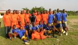 |
Yaoundé, décembre 2009 |
Collaboration Institut Africain d’Informatique, Cameroun |
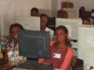 |
Lomé, février 2000 |
Collaboration ESIBA, Togo |
|
Saint Domingue, 1999 |
Aide technique à l’ONG Funredes |
|